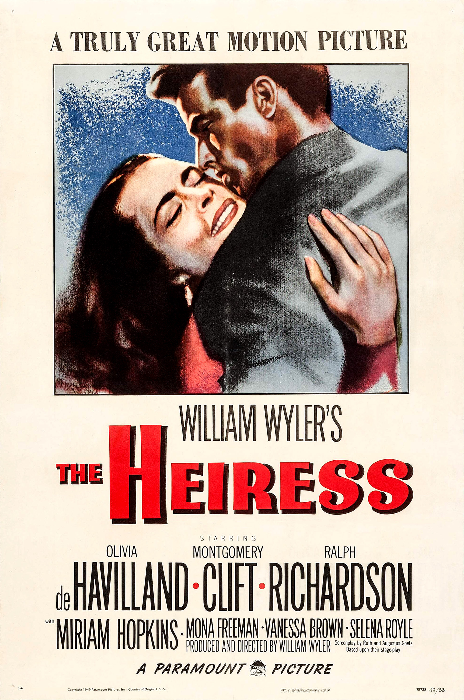

The Heiress
22nd Academy Awards
(Oscars 1950)
8 Nominations, 4 Awards
| Nominations | ||
|---|---|---|
| Category | Nominees | Result |
| Best Motion Picture | Paramount | Nominated |
| Actress | Olivia de Havilland | Won |
| Actor in a Supporting Role | Ralph Richardson | Nominated |
| Directing | William Wyler | Nominated |
| Cinematography (Black-and-White) | Leo Tover | Nominated |
| Art Direction (Black-and-White) | Emile Kuri, Harry Horner, and John Meehan | Won |
| Costume Design (Black-and-White) | Edith Head and Gile Steele | Won |
| Music (Music Score of a Dramatic or Comedy Picture) | Aaron Copland | Won |